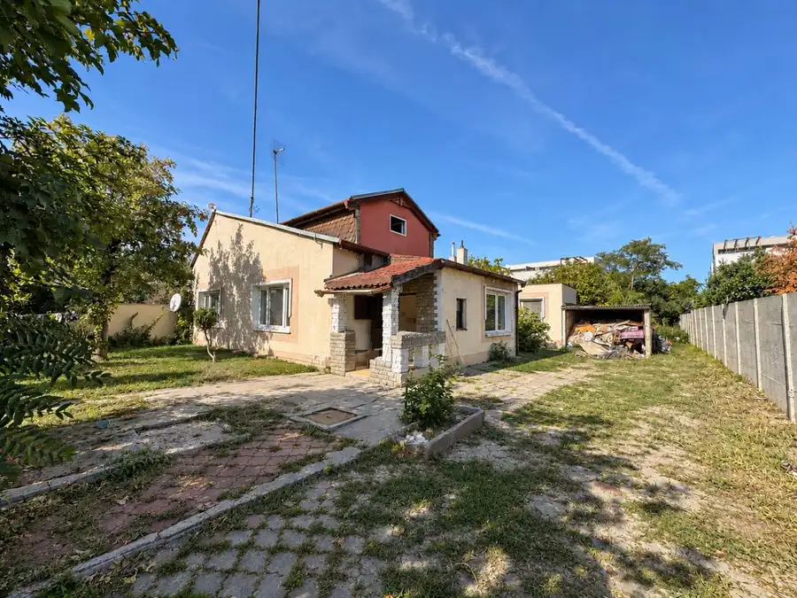
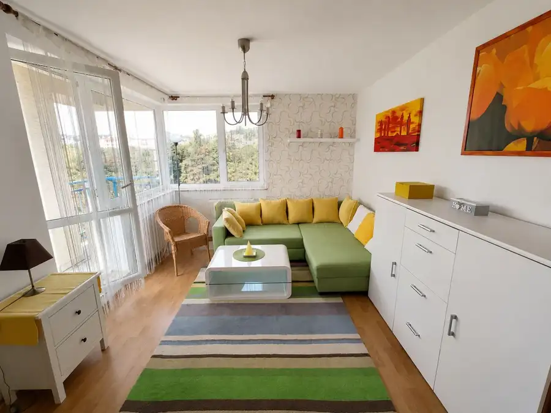
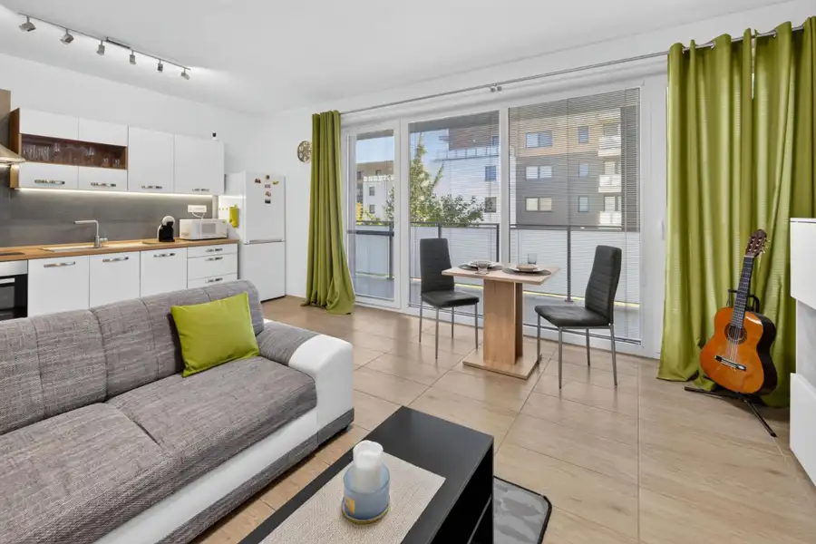
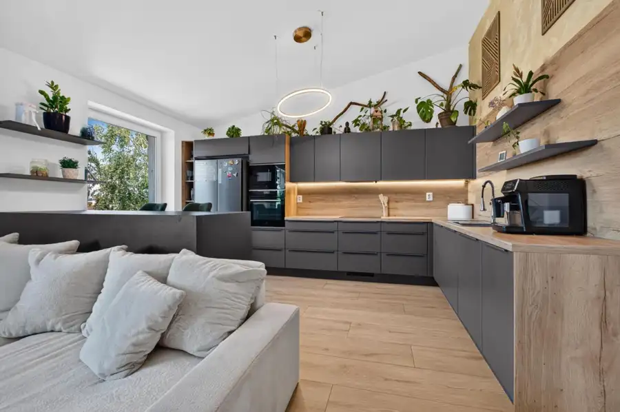
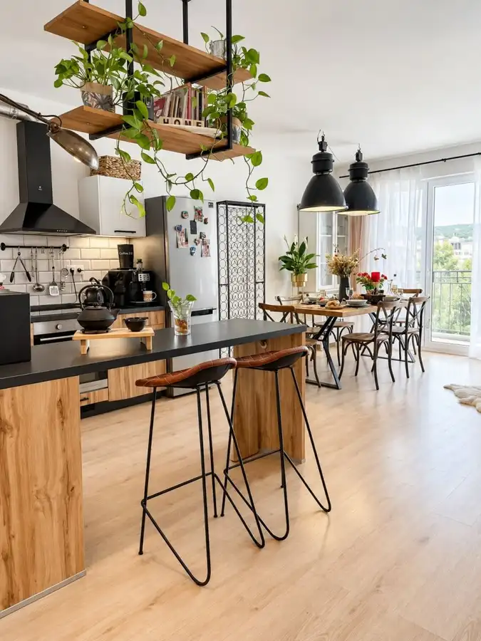

Aktuálna ponuka
5 nehnuteľností, predovšetkým byty, pozemky. Každá má vlastnú stránku s fotkami, popisom a mapou.
Prezrieť ponukuBeata HečkovaRealitná maklérka
Realitná maklérka · REB - REAL PARTNERS, s. r. o.
Predaj a prenájom nehnuteľností · Dunajská Lužná, Bratislava, Tomášov




BytNové10 Cena dohodouPredaj 4 izbový byt, 99 m2 s terasou,záhradou, 2x parkovanie,Tomášov Tomášov 4-izbový99 m² EXKLUZÍVNE | 4-IZBOVÝ BYT S TERASOU, ZÁHRADOU A BAZÉNOM, 2 PARKOVACIE STÁTIA | TOMÁŠOVREB – REAL PARTNERS exkluzívne ponúka na predaj 4-izbový…
Byt8 257 000 €Predaj 3-izbový byt GREEN VILLAGE,82m2,loggia 15m2, Dunajská Lužná Dunajská Lužná 3-izbový82 m²2. podlažie GREEN VILLAGE | ORECHOVÁ ULICA | 2-IZBOVÝ BYT SO ZIMNOU ZÁHRADOU A LOGGIOU | DUNAJSKÁ LUŽNÁREB.sk ponúka na predaj priestranný 3-izbový byt v…Tomuto výberu zatiaľ nezodpovedá žiadna ponuka. Napíšte mi, čo hľadáte.
Volám sa Beata Hečkova. Som realitná maklérka kancelárie REB - REAL PARTNERS, s. r. o. a pôsobím predovšetkým v lokalitách Dunajská Lužná, Bratislava a Tomášov (Bratislavský kraj).
5 nehnuteľností, predovšetkým byty, pozemky. Každá má vlastnú stránku s fotkami, popisom a mapou.
Prezrieť ponukuDunajská Lužná, Bratislava, Tomášov a okolie. Ponuku si môžete prezrieť podľa lokality.
Nehnuteľnosti v lokaliteOdhad trhovej ceny, príprava prezentácie, obhliadky, zmluvy a odovzdanie nehnuteľnosti.
Dohodnúť stretnutieKaždý špendlík je jedna nehnuteľnosť z mojej ponuky. Kliknite a pozrite sa.
© prispievatelia OpenStreetMap
Na čo sa pýtate najčastejšie, skôr než sa stretneme.
Odhad trhovej ceny vychádza z aktuálnych ponúk a predajov v lokalite, nie z cenníkových tabuliek. Podmienky Vám poviem pri prvom telefonáte.
Najprv obhliadka a odhad ceny, potom príprava prezentácie (fotografie, popis, inzercia), obhliadky so záujemcami, rezervačná zmluva, kúpna zmluva, návrh na vklad do katastra a odovzdanie nehnuteľnosti. O každom kroku viete vopred.
Najrýchlejšie cez WhatsApp alebo telefón. Termín stretnutia alebo obhliadky dohodneme podľa Vás.